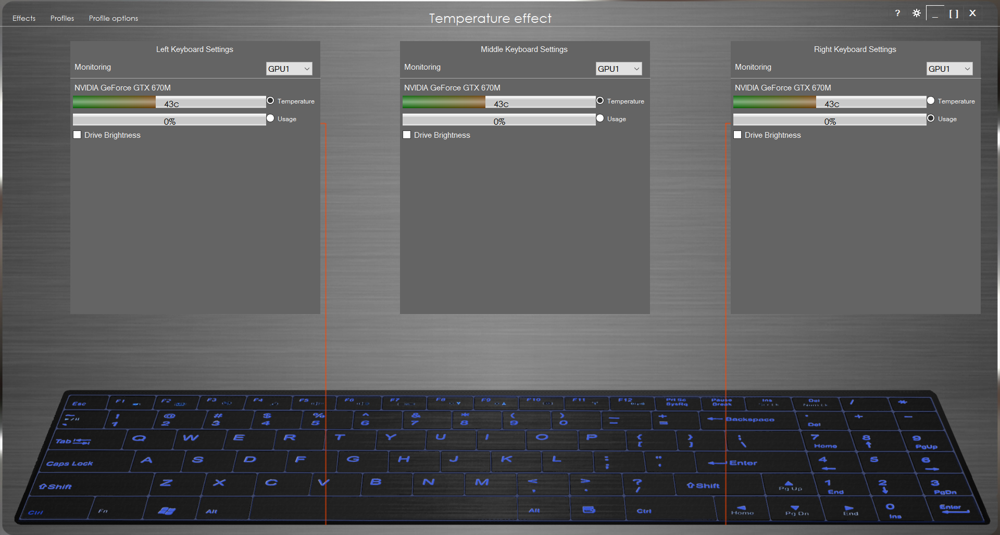
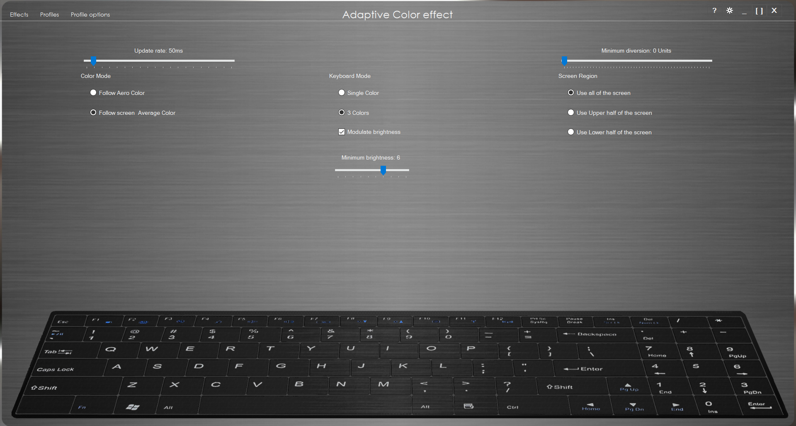

Not being satisfied with the keyboard customization that came with my Sager (rebranded Clevo) laptop when I bought it, I decided to recreate it and add the desired features. The final program added the following options to the existing collection of effects:
• Adaptive screen color - matches keyboard color to majority color on the screen
• Temperature ranges - changes colors when CPU and GPU temperatures fall within defined ranges
• Keypress speed - regions of the keyboard become "hot" with increased typing speed
• Audio feedback - modulates brightness and switches colors based on the system audio
• Custom cycles - fades between specific colors with defined time intervals
• Heartbeat - flashes like a heartbeat with increased CPU or GPU load
• Alienware FX - spoofs the dll for Alienware FX supported games to call our controller

I started development the summer after my junior year of high school. I noticed that the stock program was still using the default Windows Forms icon, so I plugged it in to ILSpy to check out the source. Sure enough, ILSpy was able to provide detailed C# code. After digging through it, I identified the function that set the colors and went from there. Still being pretty inexperienced, the initial version of the software had a very barebones gui and its main feature was temperature controlled colors.
After I was confident in its functionality, I posted the initial version on some laptop forms to get feedback and it was very well received. The forum users provided tests on other Clevo machines with the same keyboard but different CPUs and GPUs. The program drummed up enough popularity that I decided to turn it in to a total replacement of the original software. It also caught the attention of another, more experienced developer who I partnered up with to continue work on the project.

One challenge that arose during development was that my partner was located in Greece so there was always a large time delay in our communication. He proved to be very helpful in overhauling the UI, setting up a nice foundation to extend for each new effect. In addition to the new effects, our program allows for multiple profiles and program triggers for switching to each profile. Ultimately, the program was downloaded around 1000 times and was considered for distribution with Clevo laptops for a couple resellers.